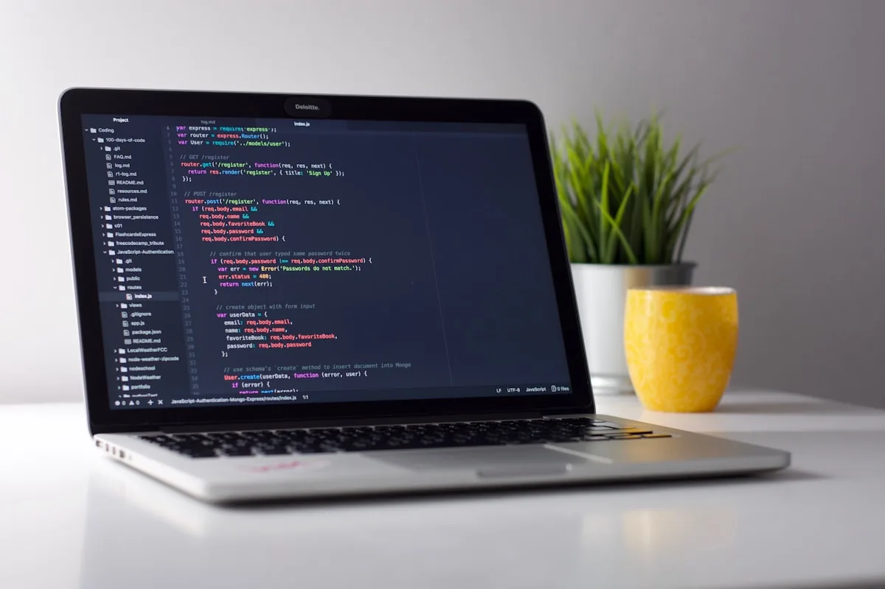
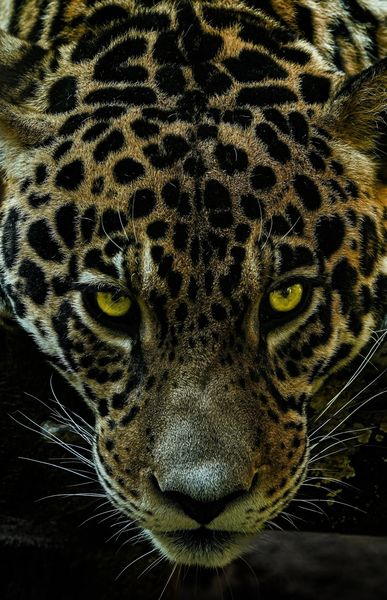

个人博客系统
Go 后端练手 / 边学边写 / blog.tuoxie.asia
用 Go 写的第一个正经项目。文章发布、分类标签、全文检索、缓存、后台管理都有，该踩的坑基本都踩了一遍。
在线体验 ↗
Gin · MySQL · Redis · ES · Vue
下面这些是我目前在用、也还在继续学的东西。右边写的是我实际拿它做过什么， 谈不上"精通"，只是确实动手写过、也踩过坑。
我不是科班出身，编程全是自己一路磕出来的。下面这条线，是从高二第一次写代码到现在。
从 Python 开始，对着教程一行行抄。因为还要上课，进度很慢，但兴趣从那时就定下了——这东西比做题有意思多了。
课余时间用 Flask 硬啃出了学校论坛/二手交易平台，做了一个简易的多人实时聊天界面。一个人从数据库写到前端页面，虽然代码很幼稚，但那种「把东西做出来」的感觉一直记到现在。
上大学了，开始学算法、刷题准备参加竞赛，同时学网络、数据库、Linux。把高中时零零散散学的东西串成一条线。
虽然专业是环境科学，但课余时间几乎全给了编程。写了博客系统、IM 即时通讯，把课上学不到的工程能力一点一点补起来。
成功转到 人工智能 专业。虽然还没开始上专业课，但方向更明确了：走传统后端或 DevOps，把底层基础打扎实。
Python转Go，在思维奇点做后端开发，直到现在
教育经历
数据结构
计算机网络
操作系统
实习经历
Go
MySQL
Linux
Git
Go 后端练手 / 边学边写 / blog.tuoxie.asia
用 Go 写的第一个正经项目。文章发布、分类标签、全文检索、缓存、后台管理都有，该踩的坑基本都踩了一遍。
把 Go 协程和长连接揉在一起试了试
主要是为了理解协程调度和 WebSocket 做的实验项目。长连接、消息广播、在线状态这些都有。
微信小程序 / 私人待办时间清单 / list.tuoxie.asia
为了熟悉小程序开发与上线流程做的多端项目，功能不复杂，主要是把一条完整链路跑通：开发、审核到上线都在上面试了一遍。
已下线 · 仅源码 / 高中在读期间写的
高二下学期开始学的编程，一边上课一边利用课余时间从头搭了这个网站。 当时也不太懂规范，但一个人用 Flask 把登录、发帖、二手交易这些模块全写出来了。 虽然早就下线了，代码也青涩，但这是起点。

— 该分类下暂无项目 —
比赛是最快的学习方式之一。时间压到极限的时候，反而更容易看清什么该做、什么可以不做。
| 年份 | 赛事 / 荣誉 | 角色 | 结果 |
|---|---|---|---|
| 2026.04 | 蓝桥杯全国软件和信息技术专业人才大赛 | Python 组 / 个人赛 | 省赛一等奖 |
我是一个兴趣爱好非常广泛的人，这里列出了最主要的几个。
我是那种会把"为什么会这样"追到底的人。虽然现在还菜，但好在有耐心。遇到不懂的就往下翻一层——配置 Nginx 的时候顺便看了 HTTP，写数据库的时候又回头翻了翻索引。 虽然每个点都不算精通，但连起来之后，整个东西是怎么转的慢慢就清晰了。 平时有空就写点博客，算是给未来的自己存档——踩过的坑写清楚了，才算没白踩。
如果你也在找后端实习或者一样在学习路上，欢迎找我聊。

实习机会、技术合作，
或者只是想聊个想法——
发邮件最快。
我一般 24 小时内回。如果超过了，大概是在赶项目或者在睡觉，再戳我一次就行。